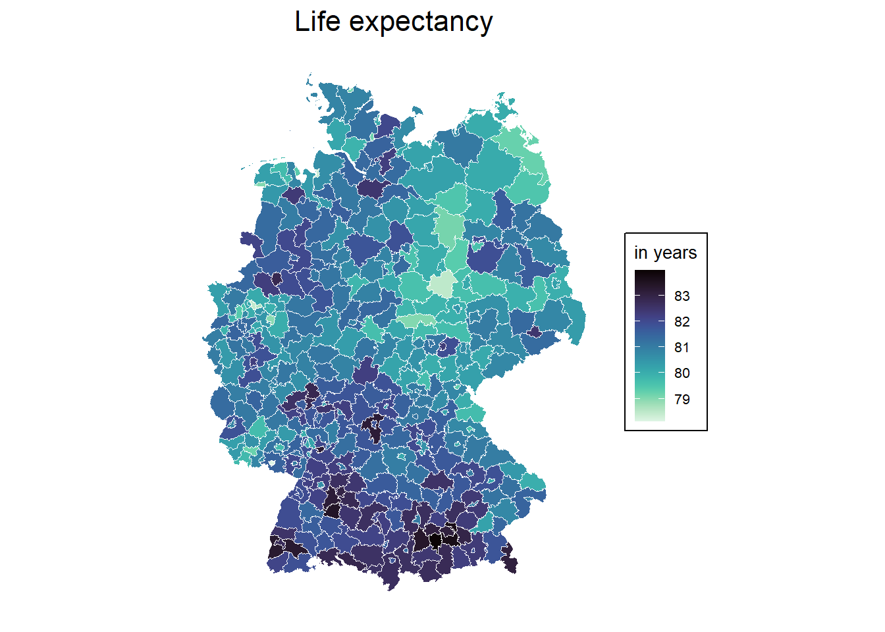
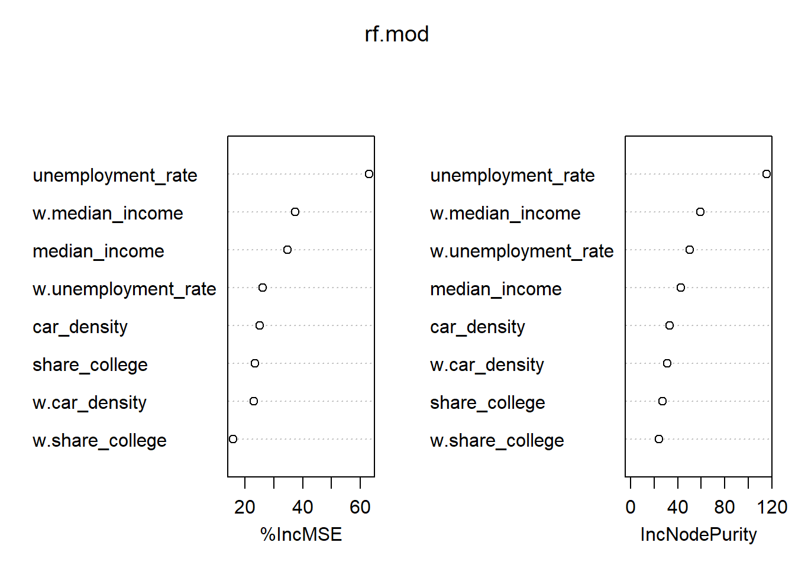

13 Exercises IIIb
\[ \newcommand{\tr}{\mathrm{tr}} \newcommand{\rank}{\mathrm{rank}} \newcommand{\plim}{\operatornamewithlimits{plim}} \newcommand{\diag}{\mathrm{diag}} \newcommand{\bm}[1]{\boldsymbol{\mathbf{#1}}} \newcommand{\Var}{\mathrm{Var}} \newcommand{\Exp}{\mathrm{E}} \newcommand{\Cov}{\mathrm{Cov}} \newcommand\given[1][]{\:#1\vert\:} \newcommand{\irow}[1]{% \begin{pmatrix}#1\end{pmatrix} } \]
Required packages
Session info
R version 4.5.1 (2025-06-13 ucrt)
Platform: x86_64-w64-mingw32/x64
Running under: Windows 11 x64 (build 22631)
Matrix products: default
LAPACK version 3.12.1
locale:
[1] LC_COLLATE=English_United Kingdom.utf8
[2] LC_CTYPE=English_United Kingdom.utf8
[3] LC_MONETARY=English_United Kingdom.utf8
[4] LC_NUMERIC=C
[5] LC_TIME=English_United Kingdom.utf8
time zone: Europe/Berlin
tzcode source: internal
attached base packages:
[1] stats graphics grDevices utils datasets methods
[7] base
other attached packages:
[1] SDPDmod_0.0.6 splm_1.6-5 lfe_3.1.1
[4] plm_2.6-6 viridis_0.6.5 viridisLite_0.4.2
[7] tmap_4.1 ggplot2_3.5.2 spatialreg_1.3-6
[10] Matrix_1.7-3 spdep_1.3-13 spData_2.3.4
[13] mapview_2.11.2 sf_1.0-21
loaded via a namespace (and not attached):
[1] Rdpack_2.6.4 DBI_1.2.3
[3] deldir_2.0-4 gridExtra_2.3
[5] tmaptools_3.2 s2_1.1.9
[7] logger_0.4.0 sandwich_3.1-1
[9] rlang_1.1.6 magrittr_2.0.3
[11] multcomp_1.4-28 e1071_1.7-16
[13] compiler_4.5.1 png_0.1-8
[15] vctrs_0.6.5 stringr_1.5.1
[17] pkgconfig_2.0.3 wk_0.9.4
[19] fastmap_1.2.0 lwgeom_0.2-14
[21] leafem_0.2.4 rmarkdown_2.29
[23] spacesXYZ_1.6-0 miscTools_0.6-28
[25] xfun_0.52 satellite_1.0.5
[27] jsonlite_2.0.0 collapse_2.1.2
[29] terra_1.8-54 parallel_4.5.1
[31] LearnBayes_2.15.1 R6_2.6.1
[33] stringi_1.8.7 RColorBrewer_1.1-3
[35] boot_1.3-31 lmtest_0.9-40
[37] stars_0.6-8 Rcpp_1.0.14
[39] knitr_1.50 zoo_1.8-14
[41] base64enc_0.1-3 leaflet.providers_2.0.0
[43] splines_4.5.1 tidyselect_1.2.1
[45] rstudioapi_0.17.1 dichromat_2.0-0.1
[47] abind_1.4-8 maptiles_0.10.0
[49] maxLik_1.5-2.1 codetools_0.2-20
[51] lattice_0.22-7 tibble_3.3.0
[53] leafsync_0.1.0 withr_3.0.2
[55] coda_0.19-4.1 evaluate_1.0.4
[57] survival_3.8-3 units_0.8-7
[59] proxy_0.4-27 pillar_1.10.2
[61] KernSmooth_2.23-26 stats4_4.5.1
[63] generics_0.1.4 sp_2.2-0
[65] scales_1.4.0 xtable_1.8-4
[67] class_7.3-23 glue_1.8.0
[69] tools_4.5.1 leaflegend_1.2.1
[71] data.table_1.17.6 RSpectra_0.16-2
[73] dotCall64_1.2 mvtnorm_1.3-3
[75] XML_3.99-0.18 grid_4.5.1
[77] rbibutils_2.3 crosstalk_1.2.1
[79] bdsmatrix_1.3-7 colorspace_2.1-1
[81] nlme_3.1-168 cols4all_0.8
[83] raster_3.6-32 Formula_1.2-5
[85] cli_3.6.5 spam_2.11-1
[87] dplyr_1.1.4 gtable_0.3.6
[89] digest_0.6.37 classInt_0.4-11
[91] TH.data_1.1-3 htmlwidgets_1.6.4
[93] farver_2.1.2 htmltools_0.5.8.1
[95] lifecycle_1.0.4 leaflet_2.2.2
[97] microbenchmark_1.5.0 MASS_7.3-65 13.1 Inkar data: the effect of regional characteristics on life expectancy
Below, we read and transform some characteristics of the INKAR data on the level of German counties.
load("_data/inkar2.Rdata")Variables are
| Variable | Description |
|---|---|
| “Kennziffer” | ID |
| “Raumeinheit” | Name |
| “Aggregat” | Level |
| “year” | Year |
| “poluation_density” | Population Density |
| “median_income” | Median Household income (only for 2020) |
| “gdp_in1000EUR” | Gross Domestic Product in 1000 euros |
| “unemployment_rate” | Unemployment rate |
| “share_longterm_unemployed” | Share of longterm unemployed (among unemployed) |
| “share_working_indutry” | Share of employees in undistrial sector |
| “share_foreigners” | Share of foreign nationals |
| “share_college” | Share of school-finishers with college degree |
| “recreational_space” | Recreational space per inhabitant |
| “car_density” | Density of cars |
| “life_expectancy” | Life expectancy |
13.2 County shapes
kreise.spdf <- st_read(dsn = "_data/vg5000_ebenen_1231",
layer = "VG5000_KRS")Reading layer `VG5000_KRS' from data source
`C:\work\Lehre\Geodata_Spatial_Regression\_data\vg5000_ebenen_1231'
using driver `ESRI Shapefile'
Simple feature collection with 400 features and 24 fields
Geometry type: MULTIPOLYGON
Dimension: XY
Bounding box: xmin: 280353.1 ymin: 5235878 xmax: 921261.6 ymax: 6101302
Projected CRS: ETRS89 / UTM zone 32N1) Please map the life expectancy across Germany
- Merge data with the shape file (as with conventional data)
# Merge
inkar_2020.spdf <- merge(kreise.spdf, inkar.df[inkar.df$year == 2020, ],
by.x = "AGS", by.y = "Kennziffer")- Create a map of life-expectancy
cols <- viridis(n = 100, direction = -1, option = "G")
mp1 <- ggplot(data = inkar_2020.spdf) +
geom_sf(aes(fill = life_expectancy), color = "white", size = 0.5) +
scale_fill_gradientn(
colours = cols, # your custom palette
name = "in years",
na.value = "grey90"
) +
labs(title = "Life expectancy") +
theme_minimal() +
theme(
plot.title = element_text(hjust = 0.5, size = 16),
legend.title = element_text(size = 10),
legend.text = element_text(size = 8),
legend.background = element_rect(fill = "white", color = "black"),
axis.text = element_blank(),
axis.ticks = element_blank(),
panel.grid = element_blank()
)
mp1
2) Chose some variables that could predict life expectancy. See for instance the following paper.
3) Generate a neighbours object (e.g. the 10 nearest neighbours).
# nb <- poly2nb(kreise.spdf, row.names = "ags", queen = TRUE)
knn <- knearneigh(st_centroid(kreise.spdf), k = 10)Warning: st_centroid assumes attributes are constant over
geometriesnb <- knn2nb(knn, row.names = kreise.spdf$ags)
listw <- nb2listw(nb, style = "W")4) Estimate a cross-sectional spatial model for the year 2020 and calculate the impacts.
### Use a spatial Durbin Error model
# Spec formula
fm <- life_expectancy ~ median_income + unemployment_rate + share_college + car_density
# Estimate error model with Durbin = TRUE
mod_1.durb <- errorsarlm(fm,
data = inkar_2020.spdf,
listw = listw,
Durbin = TRUE)
summary(mod_1.durb)
Call:
errorsarlm(formula = fm, data = inkar_2020.spdf, listw = listw,
Durbin = TRUE)
Residuals:
Min 1Q Median 3Q Max
-1.343984 -0.349567 0.013307 0.333106 1.819014
Type: error
Coefficients: (asymptotic standard errors)
Estimate Std. Error z value Pr(>|z|)
(Intercept) 8.4970e+01 1.4366e+00 59.1456 < 2.2e-16
median_income 5.4013e-04 8.2285e-05 6.5641 5.233e-11
unemployment_rate -3.8970e-01 2.0095e-02 -19.3923 < 2.2e-16
share_college 6.7806e-03 3.2502e-03 2.0862 0.036956
car_density -3.2042e-03 4.9774e-04 -6.4376 1.214e-10
lag.median_income 4.9282e-04 1.8112e-04 2.7209 0.006511
lag.unemployment_rate -3.4685e-02 4.5454e-02 -0.7631 0.445418
lag.share_college -1.7065e-03 7.0324e-03 -0.2427 0.808270
lag.car_density -5.2210e-03 1.7541e-03 -2.9765 0.002915
Lambda: 0.57895, LR test value: 48.146, p-value: 3.9563e-12
Asymptotic standard error: 0.069523
z-value: 8.3275, p-value: < 2.22e-16
Wald statistic: 69.347, p-value: < 2.22e-16
Log likelihood: -305.6855 for error model
ML residual variance (sigma squared): 0.26001, (sigma: 0.50991)
Number of observations: 400
Number of parameters estimated: 11
AIC: 633.37, (AIC for lm: 679.52)# Calculate impacts (which is unnecessary in this case)
mod_1.durb.imp <- impacts(mod_1.durb, listw = listw, R = 300)
summary(mod_1.durb.imp, zstats = TRUE, short = TRUE)Impact measures (SDEM, glht, n):
Direct Indirect Total
median_income 0.0005401284 0.0004928188 0.001032947
unemployment_rate -0.3896967422 -0.0346850810 -0.424381823
share_college 0.0067806262 -0.0017064694 0.005074157
car_density -0.0032042374 -0.0052209850 -0.008425222
========================================================
Standard errors:
Direct Indirect Total
median_income 0.0000822846 0.0001811243 0.0001813217
unemployment_rate 0.0200953892 0.0454542641 0.0455757529
share_college 0.0032501555 0.0070323979 0.0069550103
car_density 0.0004977411 0.0017540570 0.0018942566
========================================================
Z-values:
Direct Indirect Total
median_income 6.564150 2.7208866 5.6967654
unemployment_rate -19.392346 -0.7630765 -9.3115702
share_college 2.086247 -0.2426583 0.7295686
car_density -6.437558 -2.9765197 -4.4477726
p-values:
Direct Indirect Total
median_income 5.2331e-11 0.0065107 1.2210e-08
unemployment_rate < 2.22e-16 0.4454178 < 2.22e-16
share_college 0.036956 0.8082701 0.46565
car_density 1.2141e-10 0.0029154 8.6765e-065) Calculate the spatial lagged variables for your covariates (e.g. use create_WX(), which needs a non-spatial df as input) .
6) Can you run a spatial machine learning model? (for instance, using randomForest)?
randomForest 4.7-1.2Type rfNews() to see new features/changes/bug fixes.
Attaching package: 'randomForest'The following object is masked from 'package:ggplot2':
margin# Train
rf.mod <- randomForest(life_expectancy ~ median_income + unemployment_rate + share_college + car_density +
w.median_income + w.unemployment_rate + w.share_college + w.car_density,
data = st_drop_geometry(inkar_2020.spdf),
ntree = 1000,
importance = TRUE)
# Inspect the mechanics of the model
importance(rf.mod) %IncMSE IncNodePurity
median_income 34.75666 42.52646
unemployment_rate 63.14242 115.57741
share_college 23.35678 26.94967
car_density 24.99543 32.93691
w.median_income 37.47421 59.05119
w.unemployment_rate 26.15403 50.37353
w.share_college 15.82100 24.06899
w.car_density 22.98736 31.02092varImpPlot(rf.mod)
You could even go further and use higher order neighbours (e.g. nblag(queens.nb, maxlag = 3)) to check the importance of direct neighbours and the neighbours neighbours and so on …
13.3 Esimate an FE model with SLX specification
- Loops over years to generate WX
# We use gdp instead of median income (which is only available in recent year)
fm <- life_expectancy ~ gdp_in1000EUR + unemployment_rate + share_college + car_density
# All years where we have a balanced sample
years <- unique(inkar.df$year[which(complete.cases(inkar.df[, all.vars(fm)]))])
# All variables we want ot lag
vars <- all.vars(fm)
# create listw with the correct rownames (ID = Kennziffer)
kreise.spdf$Kennziffer <- kreise.spdf$ags
knn <- knearneigh(st_centroid(kreise.spdf), k = 10)
nb <- knn2nb(knn, row.names = kreise.spdf$Kennziffer)
listw <- nb2listw(nb, style = "W")
for(y in years){
# Select singe year
tmp <- inkar.df[inkar.df$year == y ,]
# Select variables and make df
x <- st_drop_geometry(tmp[, vars])
# Add ID as rownames (we retreive them again later)
rownames(x) <- tmp$Kennziffer
# Perform lag transformation (rownames contian ids)
w.tmp <- create_WX(as.matrix(x),
listw = listw,
prefix = "w",
zero.policy = TRUE) # NAs will get zero
w.tmp <- as.data.frame(w.tmp)
# add indices back
w.tmp$Kennziffer <- row.names(w.tmp)
w.tmp$year <- y
if(y == years[1]){
w.inkar.df <- w.tmp
}else{
w.inkar.df <- rbind(w.inkar.df, w.tmp)
}
}
head(w.inkar.df) w.life_expectancy w.gdp_in1000EUR w.unemployment_rate
01001 77.386 3866035 10.257
01002 77.355 3812976 10.394
01003 77.237 10728945 11.666
01004 77.458 4586244 9.999
01051 77.291 4270208 10.007
01053 77.119 11012351 11.878
w.share_college w.car_density Kennziffer year
01001 18.558 518.092 01001 1998
01002 20.389 516.400 01002 1998
01003 23.075 497.344 01003 1998
01004 20.798 516.580 01004 1998
01051 18.957 520.985 01051 1998
01053 23.625 501.522 01053 1998- Estimate a twoways FE SLX panel model
slx.fe <- felm(life_expectancy ~ gdp_in1000EUR + unemployment_rate + share_college + car_density +
w.gdp_in1000EUR + w.unemployment_rate + w.share_college + w.car_density
| Kennziffer + year | 0 | Kennziffer,
data = inkar.df)
summary(slx.fe)
Call:
felm(formula = life_expectancy ~ gdp_in1000EUR + unemployment_rate + share_college + car_density + w.gdp_in1000EUR + w.unemployment_rate + w.share_college + w.car_density | Kennziffer + year | 0 | Kennziffer, data = inkar.df)
Residuals:
Min 1Q Median 3Q Max
-1.62945 -0.17351 0.00156 0.17930 1.58230
Coefficients:
Estimate Cluster s.e. t value Pr(>|t|)
gdp_in1000EUR 1.370e-08 4.323e-09 3.170 0.00164 **
unemployment_rate 4.875e-04 1.127e-02 0.043 0.96553
share_college 2.565e-03 1.818e-03 1.411 0.15909
car_density 4.277e-04 3.351e-04 1.276 0.20254
w.gdp_in1000EUR 3.397e-08 1.107e-08 3.069 0.00230 **
w.unemployment_rate -2.848e-02 1.239e-02 -2.299 0.02203 *
w.share_college -4.753e-04 2.506e-03 -0.190 0.84966
w.car_density 1.038e-03 8.283e-04 1.254 0.21072
---
Signif. codes: 0 '***' 0.001 '**' 0.01 '*' 0.05 '.' 0.1 ' ' 1
Residual standard error: 0.2957 on 8770 degrees of freedom
Multiple R-squared(full model): 0.9602 Adjusted R-squared: 0.9582
Multiple R-squared(proj model): 0.02528 Adjusted R-squared: -0.0224
F-statistic(full model, *iid*):492.7 on 429 and 8770 DF, p-value: < 2.2e-16
F-statistic(proj model): 4.508 on 8 and 399 DF, p-value: 2.929e-05 - Estimate a twoways FE SAR panel model (use
spml())
### Estimate model
sar.fe <- spml(life_expectancy ~ gdp_in1000EUR + unemployment_rate + share_college + car_density,
data = inkar.df,
index = c("Kennziffer", "year"),
listw = listw,
model= "within",
effect= "twoways",
lag = TRUE,
spatial.error = "none"
)
summary(sar.fe)Spatial panel fixed effects lag model
Call:
spml(formula = life_expectancy ~ gdp_in1000EUR + unemployment_rate +
share_college + car_density, data = inkar.df, index = c("Kennziffer",
"year"), listw = listw, model = "within", effect = "twoways",
lag = TRUE, spatial.error = "none")
Residuals:
Min. 1st Qu. Median 3rd Qu. Max.
-1.56935018 -0.16490692 0.00062493 0.16729792 1.38374052
Spatial autoregressive coefficient:
Estimate Std. Error t-value Pr(>|t|)
lambda 0.47997 0.01653 29.037 < 2.2e-16 ***
Coefficients:
Estimate Std. Error t-value Pr(>|t|)
gdp_in1000EUR 1.2031e-08 1.4786e-09 8.1369 4.056e-16 ***
unemployment_rate -1.0767e-02 2.0558e-03 -5.2375 1.627e-07 ***
share_college 1.8501e-03 7.0611e-04 2.6202 0.008788 **
car_density 3.4915e-04 1.1950e-04 2.9218 0.003480 **
---
Signif. codes: 0 '***' 0.001 '**' 0.01 '*' 0.05 '.' 0.1 ' ' 1- Estimate the summary impacts.
sar.fe.imp <- impacts(sar.fe, listw = listw, time = length(years), R = 200)
summary(sar.fe.imp, zstats = TRUE, short = TRUE)Impact measures (lag, trace):
Direct Indirect Total
gdp_in1000EUR 1.236588e-08 1.076990e-08 2.313578e-08
unemployment_rate -1.106695e-02 -9.638614e-03 -2.070556e-02
share_college 1.901619e-03 1.656190e-03 3.557809e-03
car_density 3.588594e-04 3.125439e-04 6.714033e-04
========================================================
Simulation results ( variance matrix):
========================================================
Simulated standard errors
Direct Indirect Total
gdp_in1000EUR 1.587679e-09 1.579667e-09 3.087932e-09
unemployment_rate 2.075012e-03 1.933938e-03 3.952901e-03
share_college 6.767517e-04 5.980693e-04 1.269948e-03
car_density 1.251264e-04 1.120048e-04 2.360721e-04
Simulated z-values:
Direct Indirect Total
gdp_in1000EUR 7.823969 6.861401 7.532768
unemployment_rate -5.388480 -5.045440 -5.297055
share_college 2.794674 2.758762 2.788486
car_density 2.904305 2.831952 2.883006
Simulated p-values:
Direct Indirect Total
gdp_in1000EUR 5.1070e-15 6.8188e-12 4.9738e-14
unemployment_rate 7.1056e-08 4.5248e-07 1.1769e-07
share_college 0.0051952 0.0058021 0.0052955
car_density 0.0036807 0.0046265 0.0039390